What experienced electricians know about residential installations: common mistakes, good practice and the requirements behind them. These 74 notes are the ones behind the checks Elecivo already makes. Each is our own summary, with links to where it comes from.
Draft Common mistake Protection KB-0001
A breaker must never be rated above what its cable can carry. An oversized breaker 'so it stops tripping' (here 63 A on a lighting circuit in 1.5 mm²) protects nothing: at 1.45 × In it may take up to an hour to trip, which the cable cannot survive.
IEC: IEC 60364-4-43, 433.1 (In ≤ Iz, I2 ≤ 1.45 Iz) (reference not yet verified)
Checked in Elecivo by CABLE_OVERLOAD_002
Based on: source 1, source 2, source 3
Draft Solution Circuit KB-0003
When a lighting load is too large for one 10 A circuit, split it into several lighting circuits (for example ceiling fittings on one, wall lights on another) instead of moving up to a larger cable and breaker.
Checked in Elecivo by LIGHTING_CURRENT_027
Based on: source 1
Draft Requirement Board KB-0006
The incoming isolation of a board must disconnect every phase together. Three separate single-pole breakers standing in for a main switch are not an isolator.
IEC: IEC 60364-5-53 (isolation) (reference not yet verified)
Based on: source 1, source 2, source 3, source 4
Draft Good practice Board KB-0007
Put a main switch inside the apartment's own board, so the occupant can switch everything off without going to the meter cabinet on the stairs.
Based on: source 1
Draft Common mistake Board KB-0008
Check the supply actually reaching the apartment. Here a three-phase supply was fed through to the flat on one phase behind a 16 A breaker, while the flat ran a cooker, two air conditioners, a jacuzzi with steam and underfloor heating.
IEC: IEC 60364-1:2005, 311 (maximum demand) — formerly cited as Part 3 (reference not yet verified)
Checked in Elecivo by MAX_DEMAND_014
Based on: source 1, source 2, source 3
Draft Common mistake Board KB-0009
Inside a board, do not feed devices by looping one wire from terminal to terminal across the top of the row: the first device carries the whole board's current through its terminals and burns. Use a comb busbar or a distribution block.
Based on: source 1
Draft Good practice Documents KB-0013
Give the client a drawing of their board showing what each device is and what it feeds. It is what they look at when something trips.
IEC: IEC 60364-5-51, 514 (identification, diagrams) (reference not yet verified)
Based on: source 1
Draft Good practice Board KB-0100
Bring the incoming supply onto a main isolating switch rather than a breaker: all incoming conductors land at one point, the whole board can be made dead in one action, and the switch looks different from the breakers so anyone finds it at once.
IEC: IEC 60364-5-53 (isolation and switching) (reference not yet verified)
Based on: source 1, source 2, source 3, source 4, source 5, source 6
Draft Good practice Board KB-0107
On three phases, a board built on RCBOs takes far less rail space than one built on MCBs grouped under RCDs, but costs more; on a single-phase board the MCB-and-RCD layout is usually compact enough.
Based on: source 1, source 2, source 3
Draft Requirement Protection KB-0110
Size a circuit's protection for its weakest part. If a smaller cable is branched off a larger one (a 1.5 mm² spur to a lamp from a 2.5 mm² socket circuit), the whole circuit needs the breaker for the smaller cable, unless a breaker of the right rating is fitted at the branch point.
IEC: IEC 60364-4-43:2008, 433.2 and 434.2 (reduction of cross-section); IEC 60364-5-53:2019, 533.4.2 / 533.4.3 (reference not yet verified)
Checked in Elecivo by CABLE_OVERLOAD_002
Based on: source 1, source 2, source 3, source 4, source 5
Draft Good practice Protection KB-0111
Accessories also limit the breaker: switches and floor-heating thermostats are usually rated 10 A and sockets 16 A, so a circuit through a 10 A switch gets at most a 10 A breaker even if its cable could take more.
IEC: IEC 60364-5-51 (selection of equipment for the design current) (reference not yet verified)
Based on: source 1, source 2, source 3
Draft Common mistake Circuit KB-0112
Putting a whole kitchen on one larger cable does not add capacity: the sockets on it still cap the breaker at 16 A, so the appliances can only run one or two at a time.
IEC: IEC 60364-4-43, 433.1 (reference not yet verified)
Checked in Elecivo by DEDICATED_CIRCUIT_008
Based on: source 1
Draft Good practice Circuit KB-0113
Give rooms of a different kind their own circuits, wet rooms in particular (bathroom, WC), so that a fault or trip in a wet room does not cut supply to dry living rooms.
IEC: IEC 60364-1:2005, 314 (division of installation) (reference not yet verified)
Based on: source 1, source 2, source 3, source 4
Draft Good practice Circuit KB-0114
Give each purpose its own circuit (lighting, sockets, ventilation, towel rail, router, alarm) so each can be switched off alone for repair and none affects the others. Grouping whatever happens to lie along the cable path (a corridor light, a storeroom floor heater and kitchen sockets on one cable) is the worst case.
IEC: IEC 60364-1:2005, 314 (reference not yet verified)
Based on: source 1, source 2, source 3
Draft Good practice Circuit KB-0115
Feed a light from a lighting circuit even when its switch sits among sockets (a bedside lamp, worktop under-cabinet lighting): run the cable from the room's light switch on to the second switch, not from the nearest socket.
Based on: source 1
Draft Good practice Circuit KB-0116
Give every fixed appliance its own circuit whatever its power (hob, oven, dishwasher, washing machine, water heater, underfloor heating, ventilation, air conditioning): many have terminals for only one cable, each can then be reset from the board, and many small circuits are easier to balance across phases.
Checked in Elecivo by DEDICATED_CIRCUIT_008
Based on: source 1, source 2, source 3
Draft Good practice Documents KB-0120
Hand over a board with its connection notes and make sure whoever connects it reads them: they give the device designations, which conductor colour is L, N and PE, and where each cable goes. Ignoring them led to wrong and shortened connections.
IEC: IEC 60364-5-51, 514.5 (diagrams) (reference not yet verified)
Based on: source 1, source 2, source 3
Draft Good practice Documents KB-0121
Give finishing trades only the cable list: how many cables come to the board and what each one is. One cable per breaker as listed; when others improvised, a list of 27 cables turned into 54 and extra cables did not fit the terminals planned for them.
Based on: source 1, source 2, source 3
Draft Good practice Board KB-0131
Arrange the board so a standard comb busbar feeds devices directly: put the RCDs side by side on one busbar rather than wiring each from a distribution block, and when adding breakers extend the rail and the busbar instead of hanging devices off existing ones with short wire tails.
Based on: source 1, source 2, source 3, source 4
Draft Common mistake Bom KB-0132
Screw terminal strips in plastic housings are often chosen by the conductor size they accept, but their rated current can be far lower than what that conductor carries; they overheat and burn, the brass sleeve cracks or the screw strips, and fine strands splay. Use connectors rated for the circuit's current, such as spring or lever connectors.
IEC: IEC 60998 (connecting devices for household circuits) (reference not yet verified)
Based on: source 1, source 2, source 3
Draft Good practice Labour KB-0202
Terminating the outgoing cables in the board is its own task, costed per cable: each one is stripped, identified and connected to the right terminal. It takes longer when the cables were laid by someone else and are badly marked.
Based on: source 1
Draft Good practice Board KB-0205
A first estimate of a board should give, besides the material and labour totals, the enclosure size and weight and the list of cables that must be brought to it, so the builders can prepare the niche and the cable entries.
Based on: source 1, source 2, source 3
Draft Good practice Documents KB-0206
The board schematic is the main design product: the board is assembled from it, it goes with the finished board as its documentation, and when a client buys only the schematic it is priced as design work in its own right.
IEC: IEC 60364-5-51, 514.5 (diagrams) (reference not yet verified)
Based on: source 1, source 2
Draft Good practice Circuit KB-0217
Even with ordinary switches, light groups with a large start-up current may need lines of their own from the board.
IEC: IEC 60898-1 (instantaneous tripping bands) (reference not yet verified)
Checked in Elecivo by INRUSH_011
Based on: source 1
Draft Common mistake Documents KB-0227
Hidden routes that nobody recorded (cables entering a ceiling and reappearing somewhere unknown) make later work slow and risky; drilling for new cables can cut one. An as-built drawing of routes and junction boxes is worth handing over.
IEC: IEC 60364-5-51, 514.5 (diagrams and documentation) (reference not yet verified)
Based on: source 1
Draft Solution Route KB-0228
Rewiring a finished, occupied flat without chasing: run cables in surface trunking (let into the wall flush and papered over where spare wallpaper exists, fixed to tiles with foam tape), and in a suspended-ceiling void on clips in corrugated conduit.
Based on: source 1, source 2
Draft Good practice Labour KB-0302
A price per point is not a quote: clients who multiply it by the number of outlets forget the board, its assembly and commissioning, which have to be priced as lines of their own.
Based on: source 1
Draft Requirement Protection KB-0321
The letter before an MCB's rating sets its instantaneous trip band: B 3–5 × In suits homes with mostly resistive loads, C 5–10 × In is the general choice, D 10–20 × In is for motors and other loads with heavy start-up current.
IEC: IEC 60898-1 (instantaneous tripping types B, C, D) (reference not yet verified)
Checked in Elecivo by INRUSH_011, LOOP_IMPEDANCE_007
Based on: source 1
Draft Common mistake Board KB-0324
Do not force two conductors under one device terminal: unless the terminal is rated for two, one of them is clamped poorly, heats and burns the device (here an RCD). Land each conductor on its own terminal of a busbar or N bar.
IEC: IEC 60364-5-52, 526, clause to confirm (reference not yet verified)
Based on: source 1, source 2, source 3
Draft Solution Protection KB-0401
An inrush current limiter, a rail-mounted module placed after the switch or control relay, cures switch-on surges: it starts the load through a series resistor and bypasses the resistor with a relay a fraction of a second later. Fit one per line known to feed many or large switched-mode supplies (LED-strip drivers, power supplies in automation boards), not on every circuit as a precaution.
Checked in Elecivo by INRUSH_011
Based on: source 1, source 2
Draft Good practice Board KB-0415
In an older block the apartment's incoming breaker limits what the riser can deliver: keep the rating that was allocated or the existing one, and do not raise it without the building's agreement. Typical values were 25–32 A where cooking is on gas (weak riser) and 40–50 A where electric cookers were installed, less in transitional series.
Checked in Elecivo by MAX_DEMAND_014
Based on: source 1, source 2
Draft Good practice Protection KB-0501
Group circuits under RCDs the same way as the circuits themselves, by room and purpose (living rooms, bathroom, kitchen, kitchen appliances, balcony), using several RCDs rather than one or two for the whole flat, so a trip leaves the rest of the home working.
IEC: IEC 60364-1:2005, 314.1 (clause to confirm) (reference not yet verified)
Checked in Elecivo by SINGLE_RCD_028
Based on: source 1, source 2, source 3, source 4
Draft Good practice Board KB-0502
Lay the board out in reading order so a stranger (a firefighter, the next electrician) finds the incoming section at once: main switch, voltage relay and surge protection top left, then the always-on lines, then the switched part starting with lighting, then each RCD with its own MCBs. Moving the main switch elsewhere invites someone to mistake an ordinary breaker in the top-left corner for it and work on live parts.
Based on: source 1, source 2, source 3, source 4, source 5
Draft Good practice Bom KB-0505
Where two conductors share one device terminal, crimp them together in a twin ferrule made for two wires instead of forcing both into one ferrule of a larger size.
Based on: source 1, source 2, source 3
Draft Good practice Documents KB-0508
Mark every modular device with its designation from the board schedule before assembly, on the front where it reads without bending to look up into the board, and set the devices out on the rails by number from the printed layout.
IEC: IEC 61439-3 (clause to confirm) (reference not yet verified)
Based on: source 1, source 2, source 3, source 4, source 5
Draft Good practice Board KB-0604
The device that isolates the whole board belongs in its most obvious place, at the start of the first row with the incoming protection. Moving it elsewhere (here to the bottom row, because the board was mounted too high) makes people switch off what looks like the incomer while the board is still live.
Based on: source 1, source 2
Draft Good practice Bom KB-0605
When the client buys the materials, the contractor's list must be bought exactly as written, consumables included and in whole packs, and checked against the list on delivery. Missing small parts (terminal covers, end stops, fuse terminals), look-alike substitutes and damaged items stop the work and fall back on the contractor; procurement by the contractor, who also handles defects and returns, avoids this.
Based on: source 1, source 2
Draft Requirement Route KB-0610
In large-panel concrete buildings practically every solid wall is load-bearing or a stiffening wall: chase them only vertically, never horizontally or diagonally, and never open the joints between panels to lay cable. Horizontal chases around doors, at socket height or along the floor weaken the wall.
Checked in Elecivo by PANEL_CHASE_032
Based on: source 1, source 2, source 3, source 4
Draft Solution Route KB-0612
Where structure must not be chased, put the wiring in added layers: power cables in conduit on the floor slab under a screed, lighting cables fixed flat to the bare ceiling slab and plastered over (or chased into a ceiling plaster layer), and walls rendered thickly enough that boxes and chases sit in the plaster. It costs ceiling height and drying time, but leaves the structure untouched.
Checked in Elecivo by PANEL_CHASE_032
Based on: source 1, source 2
Draft Good practice Route KB-0613
Plan the cables first and derive the chases from them; chases and box holes cut before anyone knows how many cables go where are usually wrong and have to be filled or extended.
Based on: source 1, source 2
Draft Good practice Board KB-0700
Design the board before any cable is pulled: from the list of loads derive the cable list, put protection on each cable, lay out the board, and only then take the enclosure size, the parts list, the labels and the documents from that layout. The installers then lay cables from the cable list alone. Buying and building in a small enclosure first, and deciding circuits while pulling cables, is the commonest renovation mistake: the board ends up too small to assemble properly and has no documents.
Based on: source 1, source 2
Draft Common mistake Documents KB-0707
Give every room a unique name and use the same names on the plan, the circuit list and the board labels. Two rooms both called 'Terrace' while the circuit list speaks of large, medium and small terraces, or rooms numbered on one sheet and named on another, leave the installer guessing which circuit goes where.
Checked in Elecivo by ROOM_NAME_012
Based on: source 1, source 2
Draft Good practice Board KB-0710
Do not fill a board designed for a known home with breakers marked 'reserve': the circuits are known from the plan, and a later addition will need a rating and RCD group of its own. Leave free modules and room on the busbars instead.
Based on: source 1
Draft Requirement Protection KB-0800
On a weak supply (an old riser, a long rural line, a distant substation) the fault current at the far end of a circuit can be only a few hundred amperes or less, too little to reach a C-curve breaker's instantaneous band; a B-curve breaker, whose band starts lower, then still clears the fault quickly. Check the loop impedance rather than assume the curve is fine.
IEC: IEC 60364-4-41, 411.4.4 (Zs × Ia ≤ U0) (reference not yet verified)
Checked in Elecivo by LOOP_IMPEDANCE_007
Based on: source 1, source 2, source 3
Draft Requirement Protection KB-0803
A breaker must be able to break the largest fault current that can flow where it is installed: its rated short-circuit capacity (commonly 4.5, 6 or 10 kA on modular breakers) has to exceed the prospective fault current, which is set by the transformer, the cable sizes and the lengths back to it. Near a large transformer or on a short, heavy feeder (large cables chosen for voltage drop raise it) a 6 kA modular breaker can be too weak, and a 10 kA or moulded-case device is needed. Find the fault level from the building's design data or calculate it; when it is unknown on a heavy feeder, choose the higher capacity.
IEC: IEC 60364-4-43:2008, 434.5.1 (431.5.4 in the 2023 edition); IEC 60364-5-53:2019, 533.3.2 (breaking capacity) and 535.5 (back-up / combined short-circuit protection), clause to confirm (reference not yet verified)
Checked in Elecivo by BREAKING_CAPACITY_015
Based on: source 1, source 2, source 3
Draft Good practice Protection KB-0805
Use Type A residual-current devices on every circuit except those that feed only plain resistive heating (such as floor heating): electronic loads, including LED drivers, can leak pulsating DC, which a Type AC device does not detect.
IEC: IEC 60364-5-53:2019, 531.2.3 (choice of RCD type; formerly cited as 531.3.3), clause to confirm (reference not yet verified)
Based on: source 1
Draft Good practice Protection KB-0807
Put a circuit on an RCBO when an earth fault on it must not cut other circuits: outdoor sockets should not take outdoor lighting or the heating pumps down with them, as they would under a shared RCD. RCBOs also make three-phase boards simpler: each circuit takes its phase from a distribution block and can be moved to another phase by moving one wire.
IEC: IEC 60364-1:2005, 314.1 (division of installation to avoid inconvenience), clause to confirm (reference not yet verified)
Checked in Elecivo by OUTDOOR_SOCKET_RCD_029
Based on: source 1
Draft Good practice Bom KB-0809
Buy comb busbars made for the exact device range in the board: pitch (17.5 mm against 18 mm modules), terminal shape and the comb slot differ between makers and even between a maker's residential and professional ranges, and a mismatched comb seats badly.
Based on: source 1
Draft Good practice Protection KB-0811
Prefer electromechanical (voltage-independent) residual-current devices. Electronic ones need the supply to work and can be damaged by overvoltage (one compact range is limited to about 260 V); keep them for the rare rescue job where a too-small board in a finished wall leaves no other way to fit the circuits.
IEC: IEC 60364-5-53:2019, 531.2.3 (voltage-dependent RCDs; formerly cited as 531.3), clause to confirm (reference not yet verified)
Based on: source 1
Draft Good practice Protection KB-0813
When LED drivers trip a lighting breaker, change the curve rather than the rating: the 1.5 mm² lighting cable caps the rating at 10 A, so going from B6 to B10 did not help, C10 did, and C16 was not allowed.
IEC: IEC 60364-4-43, 433.1 and IEC 60898-1 (reference not yet verified)
Checked in Elecivo by INRUSH_011, CABLE_OVERLOAD_002
Based on: source 1
Draft Requirement Protection KB-0900
An RCD has no overcurrent release of its own, so its contacts must be protected by breakers: either the device upstream is rated no higher than the RCD, or the ratings of the MCBs below it add up to no more than the RCD's rating. Where the two can sit is free; what counts is that one of the conditions holds (one maker's guidance, so check the catalogue of the RCD actually used).
IEC: IEC 60364-5-53:2019, 531.2.3 and 535.2 (RCD protected against overcurrent as the manufacturer states; formerly cited as 531.3) — clause to confirm (reference not yet verified)
Checked in Elecivo by RCD_OVERLOAD_013
Based on: source 1, source 2, source 3
Draft Common mistake Board KB-0901
The line and the neutral of a circuit must come from the same side of the same RCD. A circuit whose line is taken after the RCD but whose neutral lands on a bar before it (or on another RCD's bar), or the reverse, trips the RCD as soon as a real load is switched on, while a small lamp may not, which makes the fault look like a faulty appliance.
IEC: IEC 60364-5-53:2019, 531.2.3 (all live conductors of a circuit pass through the RCD; PE does not; formerly cited as 531.3) — clause to confirm (reference not yet verified)
Based on: source 1, source 2
Draft Common mistake Protection KB-0902
A 100 mA or 300 mA RCD at the incomer protects against fire from earth leakage, not people. Fitted as the only residual-current device of a flat whose old final circuits are kept, it leaves them without protection against shock; they still need a 30 mA device.
IEC: IEC 60364-4-41, 411.3.3 (additional protection by RCD with IΔn ≤ 30 mA for socket-outlets up to 32 A) — clause to confirm (reference not yet verified)
Based on: source 1, source 2
Draft Good practice Protection KB-0903
Every circuit and appliance leaks a little current to earth through its insulation and filters, and an RCD may trip at anywhere from half to all of its rated residual current. Many circuits under one 30 mA RCD add up their standing leakage and cause nuisance trips, so spread circuits over several RCDs.
IEC: IEC 60364-5-53:2019, 531.2.3 (sum of protective-conductor currents downstream kept below 0.3 × IΔn; formerly cited as 531.3.2) — clause to confirm (reference not yet verified)
Checked in Elecivo by RCD_LEAKAGE_030, RCD_CIRCUITS_031
Based on: source 1
Draft Good practice Protection KB-0904
Choose the RCD type by the leakage waveform: type AC detects only sinusoidal residual current, type A also pulsating DC, which switch-mode electronics produce (LED lamps and drivers, chargers, appliance controls). With electronics everywhere, AC is left at best for plain resistive heating.
IEC: IEC 60364-5-53:2019, 531.2.3 (type chosen by the residual-current waveform; formerly cited as 531.3.3) — clause to confirm (reference not yet verified)
Based on: source 1
Draft Good practice Protection KB-0905
Prefer RCDs that work independently of the supply voltage (electromechanical). A voltage-dependent (electronic) one powers its trip circuit from the mains it watches, so it can fail to trip after a lost neutral or be damaged by overvoltage, and it often has a fixed line terminal or supply side.
IEC: IEC 61008-1 / IEC 61009-1 (functionally independent vs dependent on line voltage); IEC 60364-5-53:2019, 531.2.3 — clause to confirm (reference not yet verified)
Based on: source 1
Draft Requirement Protection KB-1012
In a TT installation the incoming neutral is not earthed locally, so on a supply fault it can rise to any voltage; put RCDs on every circuit, and keep the N bar and PE bar separate with no link between them. The author regards TN-C-S as more forgiving, with RCDs optional on some dry-room circuits, which IEC practice does not support for socket circuits.
IEC: IEC 60364-4-41, 411.5 (TT: RCD protection, RA × IΔn ≤ 50 V) and 411.3.3 (reference not yet verified)
Based on: source 1
Draft Good practice Board KB-1101
Balance a three-phase board simply: take each circuit's maximum load and spread the circuits so the per-phase sums come out about equal, even when the sum is far above the allowed power. Socket circuits make any finer estimate guesswork, so the board must also allow re-phasing later.
Checked in Elecivo by PHASE_BALANCE_009
Based on: source 1, source 2, source 3
Draft Solution Protection KB-1104
On a three-phase board the most flexible arrangement is one RCBO per circuit: each circuit has its own overcurrent and residual-current protection, a leak (even an intermittent one) trips only that circuit, the neutrals are linked by an N comb busbar, and the phase is set by one wire from the distribution block. The author makes this the default and accepts the cost.
Based on: source 1, source 2, source 3
Draft Common mistake Cable KB-1110
Never run several final circuits in one multi-core cable (for example lighting, sockets and heaters of a room in one 5-core cable, each from its own single-pole breaker on a different phase, sharing one neutral and one PE). Switching off one breaker leaves the others live in the same cable, with up to 400 V between them, and a broken shared neutral in a buried joint puts line-to-line voltage on the appliances. Each circuit gets its own cable and neutral.
IEC: IEC 60364-5-52 (separate circuits; a neutral not common to several circuits: clause to confirm) (reference not yet verified)
Based on: source 1
Draft Common mistake Route KB-1111
Black corrugated conduit (typically polyethylene) is meant for surface runs: it resists sunlight but supports combustion, so do not use it for concealed wiring 'because it is stronger'. Use flame-retardant (self-extinguishing) conduit in walls, and heavy-duty conduit where it is cast into concrete.
IEC: IEC 61386 (non-flame-propagating classification; clause to confirm) (reference not yet verified)
Based on: source 1
Draft Good practice Bom KB-1117
Fix modular devices on the DIN rail with end stops (rail clamps) at the ends of each row so they cannot slide along it.
Based on: source 1, source 2, source 3
Draft Good practice Board KB-1203
Bring cables into a board through proper entries, cable glands sized to each cable (or conduit glands for flexible metal conduit), so the enclosure keeps its IP rating and no sheath rubs on a sharp edge; cover the cut end of a metal conduit, for example with heat-shrink, so it cannot cut hands or insulation.
IEC: IEC 60364-5-52, 522 (external influences; clause to confirm) (reference not yet verified)
Based on: source 1
Draft Common mistake Board KB-1209
Neutral and earth bars are not for distributing a phase. To split a line conductor to several devices use a comb busbar, or rail terminals linked by jumpers rated for the current.
Based on: source 1
Draft Good practice Cable KB-1216
Leave each cable arriving at a board with a tail of about one and a half times the board's height, so its cores can run down the side of the enclosure and turn across to their device instead of being forced behind the rails.
Based on: source 1, source 2
Draft Good practice Documents KB-1217
Fix the board design before ordering: schematic, device count and a check that everything fits come first, then the material order. Issue the cable list and the cost early, but add the device designations and layout only when the board can no longer change, because a late change renumbers devices.
Based on: source 1
Draft Common mistake Board KB-1300
Use the comb busbar made for the device series, at the standard 17.5 mm pitch and inserted the way the maker intends. A generic busbar of a slightly different pitch (18 mm), or one with teeth cut out and fitted back to front, pushes the devices out of line and leaves the supply conductors hard to land.
IEC: IEC 61439-3 (distribution boards for ordinary persons), clause to confirm (reference not yet verified)
Based on: source 1
Draft Good practice Board KB-1301
Lay the board out on a drawing (or in software) and check that every device, busbar and terminal fits before anything is cut; changes then cost nothing, and the layout drawing becomes the board's documentation.
Based on: source 1
Draft Good practice Bom KB-1302
A material list must name each item precisely (maker's part number, rating, poles, curve), not by a generic description such as 'contactor' or 'impulse relay': a vague line gets bought as whatever is on the shelf. Leave zero-quantity lines out of the printed list.
Based on: source 1
Draft Common mistake Circuit KB-1305
Check every large single-phase appliance against the incoming protection: an outdoor air-conditioning unit that needs a 32 A breaker on a flat with a 32 A incoming breaker gives no margin, and an overload may trip the whole flat. At such powers choose a three-phase unit, or allow for it with load shedding.
IEC: IEC 60364-5-53:2019, 535.1 (selectivity; formerly cited as 536.4), clause to confirm (reference not yet verified)
Checked in Elecivo by SUPPLY_DISCRIMINATION_016
Based on: source 1
Draft Good practice Board KB-1308
A large flat with a three-phase supply, dozens of cables, load shedding and always-on sections needs much more board space than a typical 72-module enclosure; when the wall space is not there, split it into an incoming / power-management board and a separate distribution board.
Based on: source 1
Draft Good practice Protection KB-1309
Use Type A RCDs (or better) for socket and appliance circuits: modern appliances with electronics can produce pulsating DC fault currents that a Type AC device may not detect.
IEC: IEC 60364-5-53:2019, 531.2.3 (RCD types; formerly cited as 531.3.3), clause to confirm (reference not yet verified)
Based on: source 1
Draft Good practice Bom KB-1314
Use deep back boxes for dimmers and other deep devices, and at switches where the lighting cables of a room are joined; a standard 68 × 42 mm box holds a few lever connectors, a deep one makes the work quick and tidy.
Based on: source 1, source 2
Draft Good practice Cable KB-1325
Pull power cables into corrugated conduit even where the cable type may be buried in plaster or screed, and always put data and coaxial cables in conduit: their sheaths do not stand the alkali in cement mortar. One 3 × 2.5 mm² cable fits a 16 mm conduit if it is straight and clean; long runs can be drawn in sections.
IEC: IEC 60364-5-52, 522 (external influences), clause to confirm (reference not yet verified)
Based on: source 1